Build and download the demonstration project on the target board.
Terminal interface setup:
A virtual COM port will be detected on the computer, when the USB cable is connected to USB-UART connector.
Open a standard terminal application on the computer (like Hyper-terminal or Tera Term) and configure the virtual COM port.
Set the serial baud rate to 115200 baud in the terminal application.
See that the initialization prints on the serial port terminal.
Execution:
After the successful broad bring up and press Enter key, the console output becomes
Figure . Putty serial console
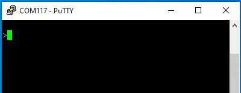
Send Help command
Figure . Help command output
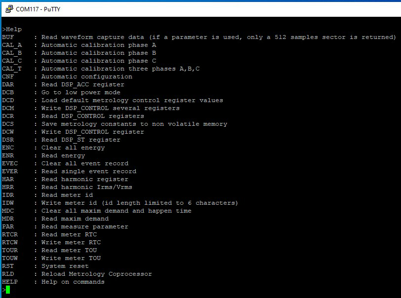
The following command examples have been sent after applying certain V and I parameters and performing a calibration of a PIC32CXMTH-DB board.
Figure . Voltage and Current settings
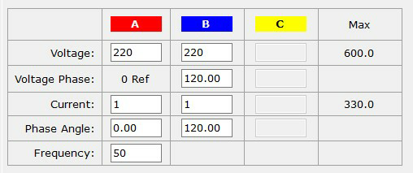
.
Read the metrology control registers.
Figure . DCR command output
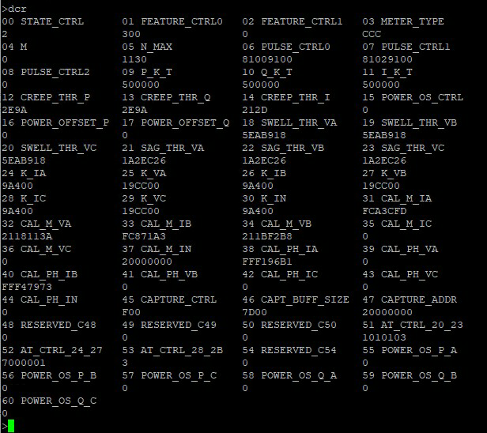
Read the metrology accumulators registers.
Figure . DAR command output
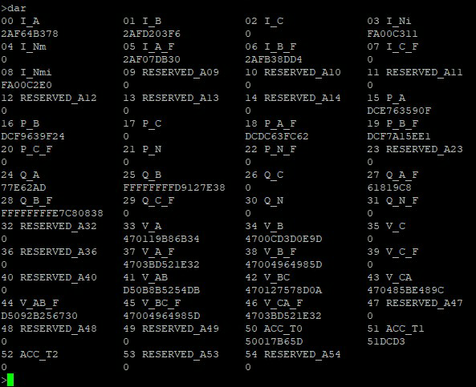
Read voltage.
Figure . Voltage measurements
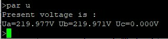
Read current.
Figure . Current measurements
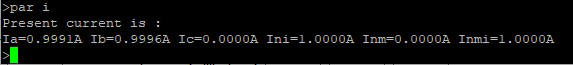
Read angle.
Figure . Angle measurements
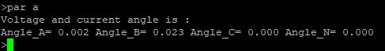
Read frequency.
Figure . Frequency measurements
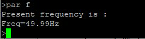
Read Active power.
Figure . Active power measurements
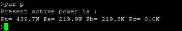
Read Reactive power.
Figure . Reactive power measurements
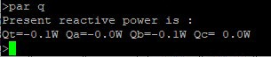
The online versions of the documents are provided as a courtesy. Verify all content and data in the device’s PDF documentation found on the device product page.